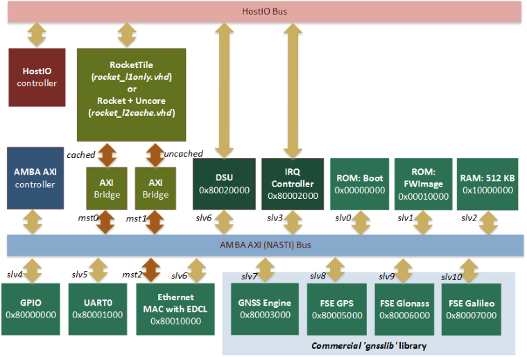
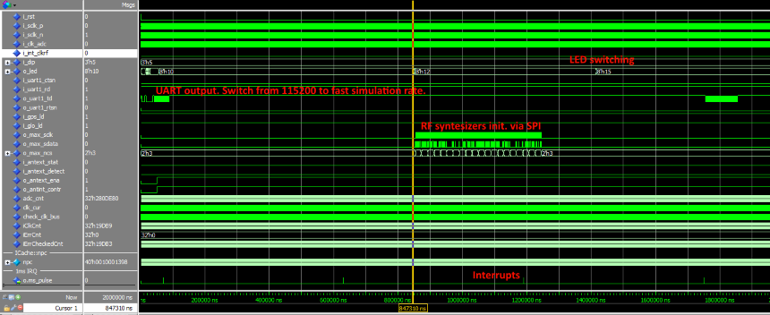

- Overview
- The IP Library is an integrated set of reusable IP cores, designed for system-on-chip (SOC) development. The IP cores are centered around a common on-chip AMBA AXI system bus, and use a coherent method for simulation and synthesis. This library is vendor independent, with support for different CAD tools and target technologies. Inherited from gaisler GRLIB library plug&play method was further developed and used to configure and connect the IP cores without the need to modify any global resources.
- Library organization
- This repository is organized around VHDL libraries, where each major IP is assigned a unique library name. Using separate libraries avoids name clashes between IP cores and hides unnecessary implementation details from the end user.
- Satellite Navigation support
- Hardware part of the satellite navigation functionality is fully implemented inside of the gnsslib library. This library is the commercial product of GNSS Sensor limited and in this shared repository you can find only: modules declaration, configuration parameters and stub modules that provide enough functionality to use SOC as general purpose processor system based on RISC-V architecture. Netlists of the real GNSS IPs either as RF front-end for the FPGA development boards could be acquires via special request.
- Common Top-level structure

- Features
-
Pre-generated single-core "Rocket-chip" core (RISC-V). This is 64-bits processor with I/D caches, MMU, branch predictor, 128-bits width data bus, FPU (if enabled) and etc.
-
VHDL Bridge from TileLinks to AXI4 (NASTI) bus.
-
Set of common peripheries: UART, GPIO (LEDs), Interrupt controller etc.
-
Debugging via ethernet using EDCL capability of the MAC. This capability allows to redirect UDP requests directly on system bus and allows to use external debugger from the Reset Vector.
-
Debug Support Unit (DSU) provides access to the internal registers of the CPUs using HostIO interface.
-
Templates for the AXI slaves and master devices with DMA access
-
Configuration parameters to enable/disable additional functionality, like: GNSS Engine, Viterbi decoder, etc.
- Top-level simulation
- Use file work/tb/rocket_soc.vhd to run simulation scenario. You can get the following time diagram after simulation of 2 ms interval.

- Note
- Provided Firmware can detect RTL simulation target (see fw/boot/src/main.c line 35) and can speed-up simulation by removing some delay and changing some parameters (UART speed for example).
- Running on FPGA
- Supported FPGA:
-
ML605 with Virtex6 FPGA using ISE 14.7 (default).
-
KC705 with Kintex7 FPGA using Vivado 2015.4.
- Warning
- Switch ON DIP[0] (i_int_clkrf) to enable test mode because you most probably doesn't have RF front-end. Otherwise there wouldn't be generated interrupts and, as result, no UART output..
Information about GNSS (Satellite Navigation Engine) you can find at www.gnss-sensor.com.
 1.8.10
1.8.10